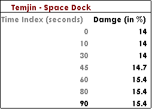
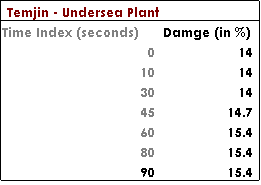
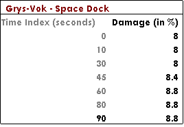
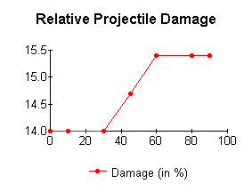
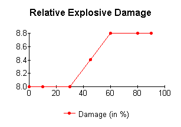

Monday, June 04,
2001
Conclusion: Contrary to the Virtual-On playing community belief, variations in damage amounts during game play do not occur based on weapon types or playing stage – but rather the duration of a match.
Virtual-On: Oratorio Tangram (VOOT) is an action/versus fighting video game for Sega’s Dreamcast console gaming platform. The game itself has developed a following worldwide due to its innovative game play and full three-dimensional environment. In the Pacific Northwest area, there are a variety of game play leagues. I administrate the Auburn Virtual-On Club and am active in the worldwide Virtual-On: Reverse Engineering Project. (VO: REP)
As a member of the Virtual-On: Reverse Engineering Project, one of my tasks is to gather, record, and reverse engineer data from the original game. We have reached a phase where a deeper understand of the damage calculation algorithms is necessary. Because this coincided with the “research paper,” a combination of my assignments seemed prudent.
In previous statistical models used by the VO: REP, it was originally thought VOOT varied damage between players based on the types of weapons used as well as the locale of two opponents. I decided to scientifically test this model via varying locale and weapon type.
Experimentally testing the effect of locale upon damage values was simple. Two situations, the “control” and “experimental”, were formed for the testing. Historically, a locale known as “Space Dock” has been chosen because of its lack of game environment changes. For the similar historical reasons, the Virtuaroid “Temjin” was used as the control.
A radically different locale was necessary for the experimental group. The group used a locale known as “Undersea Plant,” which includes a variety of environmental factors; the most important factor being the entire locale is submerged in an unidentified ocean.
|
 |
 |
Surprisingly, locale and environmental factors appeared to have no direct affect upon damage. The factoring out of locale simplifies the reverse engineering work and also disproves a common mis-belief, which had been negatively affecting our previous model and simulations.
Experimentally testing the effect of weapon types upon damage values proceeded in a fashion similar to the locale experiment. However, the weapons types were controlled instead of varying the locale and environmental factors. For experimental and historical consistency, “Space Dock” again was the chosen locale for the weapon tests.
The two Virtuaroids varied between were “Temjin” and “Grys-Vok.” Temjin and Grys-Vok are, respectively, both classical examples of projectile and explosive based weaponry.

A comparison in the data between Temjin and Grys-Vok rules out the factor of weapon type being the direct cause of damage variation.
Had the data collection not taken into account time indexing, the researcher would have been quite dejected. Nevertheless, after the empirical evidence disproved the initial hypothesis model, a new trend was noticed within. All others factors accounted for, the logical conclusion for the experimental factor was the time index into a single game round. Further testing in all other accessible locales supported this hypothesis.
|
 |
 |
The above scatter plots are scaled to elucidate the shifts between projectile and explosive damage quantities. It appears a linear equation would the best estimate for both damage types.
After linear regression is performed, an interesting similarity between the data sets is revealed. Both have a co-relation coefficient of 0.9304.
(attached graphs “Relative Projectile Damage - Regression” and “Relative Explosive Damage - Regression”)
The importance of the two co-relation coefficients being, with deference to significant figures, exactly the same is only meaningful when the two models are compared. If a single damage variance model is used within the game, any linear regression of a particular weapon will result in a stable form of equation. In fact, since the y-intercept refers to the base weapon damage and the differences between the measured damage quantities is so minute, the slopes too should be roughly the same. The similarity of the both coefficients and slopes encourages this researcher his data collection was accurate.
Unfortunately, the regression ascertained equation offers little use for the VO: REP project. The explosive model wrongly predicts at time index 100 a typical explosive will eliminate nine percent of a Virtuaroid’s amour. Further study of the collected data suggests, rather than a linear equation, the game uses a step function based on a percentage of the base weapon damage.
In future research, I intend on a full reverse engineer of the step equation. In the present, though, the linear regression does offer a game player a mental method of forecasting their weapon damages in game play. And in the end, Virtual-On is only a game.